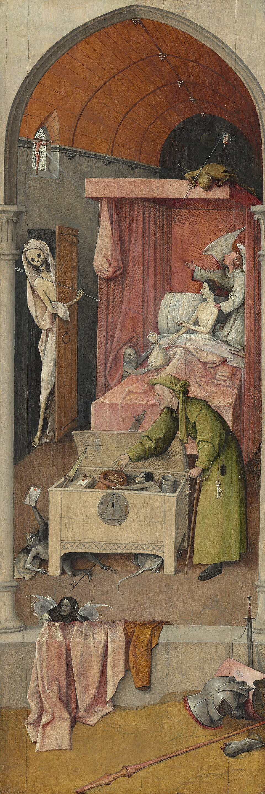

1 John 2 — The Mister Translation

⚠ Bosch’s miser, torn at the hour of death between the crucifix in the window and the bag a demon holds out to him, beside verse 17, ‘the world is passing away, and its desire, but whoever does the will of God remains forever.’ The painting is one artist’s moral picture; the letter does not describe a deathbed.

Translator’s Notes
“My little children, I am writing these things to you so that you may not sin. And if anyone does sin, we have an Advocate with the Father, Jesus Christ the righteous.” Teknion, “little child,” stands in eight verses (dictionary). Seven are in this letter, and the other is Jesus at the supper, “Little children, I am with you only a little while longer” (John 13:33). The verse answers chapter 1 from both sides: “If we say that we have no sin, we deceive ourselves” (1 John 1:8), and yet the writer writes “so that you may not sin.” Paraklētos, “Advocate,” stands in five verses (dictionary). Four are the Spirit in John’s Gospel; here, the fifth, the Advocate is Jesus, and Jesus’s “another Advocate” at John 14:16 implies a first (the note there sets out the word). “The righteous” takes up “he is faithful and just” of 1 John 1:9. The KJV and the ASV read “an advocate with the Father, Jesus Christ the righteous”; the NWT 1984 reads “we have a helper with the Father”; the NIV reads “an advocate with the Father—Jesus Christ, the Righteous One.”
⚠ “And he himself is the atonement for our sins, and not for ours only but also for the whole world.” Hilasmos stands in two verses, here and 4:10 (dictionary). Its family is the tax collector’s “be merciful to me” at Luke 18:13, the “place of atonement” of Romans 3:25 and Hebrews 9:5, and “to make atonement for the sins of the people” at Hebrews 2:17. Whether the word means turning away God’s anger (“propitiation”) or wiping away the sin (“expiation”), readings differ; the note at Romans 3:25 sets them out, and this translation prints “atonement,” which is the word of Hebrews 2:17, and does not choose. “The whole world” is the world of “the sin of the world” at John 1:29 and “the Saviour of the world” at John 4:42; what “for the whole world” means for who is saved is argued between traditions. The KJV reads “he is the propitiation for our sins: and not for ours only, but also for the sins of the whole world,” adding “the sins of”; the NWT 1984 reads “a propitiatory sacrifice”; the NIV reads “the atoning sacrifice for our sins.”
“And by this we know that we have come to know him: if we keep his commandments. Whoever says, ‘I have come to know him,’ and does not keep his commandments is a liar, and the truth is not in him.” “By this we know” is the letter’s test, and it comes back through the letter. “Keep his commandments” is Jesus’s “If you love me, you will keep my commandments” (John 14:15) and “If you keep my commandments you will remain in my love” (John 15:10). Pseustēs, “liar,” stands in ten verses, five of them in this letter, as “we make him a liar” at 1 John 1:10; Jesus says “If I said I did not know him, I would be a liar like you” at John 8:55. The KJV reads “He that saith, I know him, and keepeth not his commandments, is a liar”; the NWT 1984 reads “and yet is not observing his commandments, is a liar.”
“But whoever keeps his word, in him the love of God has truly been made complete. By this we know that we are in him.” “Keeps his word” is Jesus’s “I do know him, and I keep his word” at John 8:55. ⚠ “The love of God” can mean the reader’s love for God, or God’s love for the reader, or a love like God’s; readings differ, and this translation keeps the open phrase. The NIV reads “love for God is truly made complete in them.” “Made complete” is teleioō, as in “by one offering he has made complete for all time” at Hebrews 10:14 (dictionary). The KJV reads “in him verily is the love of God perfected.”
“Whoever says he remains in him ought himself also to walk just as that one walked.” “Remains” is menō, the word of the vine, “Remain in me, and I in you” (John 15:4) (dictionary); this translation keeps “remain” for it through the chapter, where the shelf says “abide.” “That one” is ekeinos, and in this letter it is Jesus. The 28th Nestle-Aland edition and the Byzantine text add “so”: the KJV reads “He that saith he abideth in him ought himself also so to walk, even as he walked.” Jesus had said, “I have given you an example, that you also should do just as I have done to you” (John 13:15). The NIV reads “must live as Jesus did,” supplying the name.
“Beloved, I am not writing you a new commandment, but an old commandment which you have had from the beginning; the old commandment is the word that you heard. Yet I am writing you a new commandment.” The commandment is the one of John 13:34, “A new commandment I give you, that you love one another,” old because they have had it “from the beginning” of their faith, and new because it belongs to the age now dawning. 2 John 1:5 makes the same move. “New” is kainos (dictionary). The Byzantine text reads “Brothers” for “Beloved” and adds “from the beginning” at the end of verse 7: the KJV reads “Brethren … The old commandment is the word which ye have heard from the beginning.”
“Which is true in him and in you, because the darkness is passing away and the true light is already shining.” “Is passing away” is paragō, the verb of “the form of this world is passing away” at 1 Corinthians 7:31, and it comes again at verse 17. “The true light” is John’s “The true light, which gives light to everyone, was coming into the world” (John 1:9); “true” is alēthinos (dictionary). The KJV reads “the darkness is past, and the true light now shineth”; the ASV reads “the darkness is passing away, and the true light already shineth.”
“Whoever says he is in the light and hates his brother is in the darkness until now. Whoever loves his brother remains in the light, and there is no cause of stumbling in him.” The three “whoever says” of verses 4, 6 and 9 answer the three “If we say” of 1:6, 8 and 10. “Brother” is a fellow believer; the NIV reads “hates a brother or sister.” “Cause of stumbling” is skandalon, printed “snare” at Romans 14:13 (dictionary); whether “in him” means in the one who loves or in the light, the Greek allows both, and Jesus’s saying “if anyone walks in the night, he stumbles, because the light is not in him” (John 11:10) stands behind it. The KJV reads “there is none occasion of stumbling in him”; the Douay reads “there is no scandal in him.”
“But whoever hates his brother is in the darkness and walks in the darkness, and does not know where he is going, because the darkness has blinded his eyes.” “Does not know where he is going” is Jesus’s own sentence, “the one who walks in the darkness does not know where he is going” (John 12:35). “Has blinded” is the verb of “He has blinded their eyes” at John 12:40 and “The god of this age has blinded the minds of the unbelievers” at 2 Corinthians 4:4. The NIV reads “the darkness has blinded them.”
“I am writing to you, little children, because your sins are forgiven you on account of his name. I am writing to you, fathers, because you have come to know him who is from the beginning. I am writing to you, young men, because you have conquered the evil one.” Six lines follow in two sets of three: three with “I am writing” (graphō, verses 12–13) and three with “I have written” (egrapsa, verse 14). ⚠ Why the tense changes, readings differ: the “have written” may point back to an earlier letter or to the Gospel, or to what this letter has said so far, as Greek letter-writers could put their writing in the past from the reader’s point of view. Who the three groups are also is read two ways: three ages in the congregation, or the whole congregation addressed three ways, since “little children” is the name the letter gives to all its readers (2:1, 2:28). This translation does not choose. “Because” (hoti) can also be read “that”: the writer tells them what they have, or tells them that they have it.
“I have written to you, children, because you have come to know the Father … young men, because you are strong, and the word of God remains in you, and you have conquered the evil one.” The verse numbers differ between editions here. The Greek editions begin verse 14 with “I have written to you, children,” and this translation follows them, as the NIV does: “I write to you, dear children, because you know the Father.” The Received Text has “I am writing” for the first of these, and the KJV puts the line at the end of verse 13: “I write unto you, little children, because ye have known the Father.” The ASV keeps that numbering with the Greek tense: “I have written unto you, little children, because ye know the Father.” Ton ap’ archēs, “him who is from the beginning,” stands in two verses, 13 and 14, and recalls “That which was from the beginning” of 1 John 1:1; whether it is the Father or the Son, readings differ. “Young men” is neaniskoi, as in “your young men will see visions” at Acts 2:17 (dictionary); “children” is paidia, the risen Jesus’s “Children, you do not have anything to eat, do you?” at John 21:5 (dictionary). “Conquered” is nikaō in the perfect, Jesus’s “I have conquered the world” at John 16:33; “the evil one” is the one Jesus prays the Father to keep them from at John 17:15. The KJV reads “ye have overcome the wicked one”; the NWT 1984 reads “YOU have conquered the wicked one.”
“Do not love the world or the things in the world. If anyone loves the world, the love of the Father is not in him.” The same Gospel says “this is how God loved the world” (John 3:16); kosmos there is the world God loves, and here it is the world arranged against him, as in “friendship with the world is hostility toward God” at James 4:4 and “If you were of the world, the world would love its own” at John 15:19 (dictionary). “The love of the Father” is open in the same way as “the love of God” in verse 5. The KJV reads “Love not the world, neither the things that are in the world”; the NWT 1984 reads “Do not be loving either the world or the things in the world.”
“Because everything in the world — the desire of the flesh and the desire of the eyes and the arrogance of possessions — is not from the Father but is from the world.” “Desire” is epithymia (dictionary). Alazoneia, “arrogance,” stands in two verses (dictionary). The other is “you boast in your arrogance” at James 4:16. “Possessions” is bios, not the zōē of “eternal life”: it is the younger son’s “property” at Luke 15:12 and the widow’s “all the living she had” at Luke 21:4, what one lives on, and the arrogance is the boast of having it. Readers have set the three beside the woman’s look at the tree in Genesis 3:6, “good for food … a delight to the eyes … desirable for gaining wisdom”; the letter does not make the link. The KJV reads “the lust of the flesh, and the lust of the eyes, and the pride of life”; the ASV reads “the vain glory of life”; the NWT 1984 reads “the showy display of one’s means of life.”
“And the world is passing away, and its desire, but whoever does the will of God remains forever.” “Is passing away” is the verb of verse 8, where the darkness was passing; “remains” is menō again. The KJV reads “And the world passeth away, and the lust thereof: but he that doeth the will of God abideth for ever.”
“Children, it is the last hour; and as you heard that antichrist is coming, even now many antichrists have come; by this we know that it is the last hour.” Eschatē hōra, “the last hour,” stands in one verse, twice; John’s Gospel speaks of “the last day” (John 6:39, John 11:24). Antichristos stands in four verses (dictionary), all in John’s letters: here, verse 22, 4:3 and 2 John 1:7, “This is the deceiver and the antichrist.” It is not in Revelation. ⚠ The printed text has no article, “that antichrist is coming”; the Byzantine text has “the antichrist.” Readers have long joined the word to “the man of lawlessness” of 2 Thessalonians 2:3 and to the beasts of Revelation, and expected one figure at the end; the letter itself says “many antichrists have come” and defines the antichrist in verse 22 as whoever denies the Father and the Son. Whether John also expects one figure still to come, readings differ, and this translation does not choose. Jesus had warned that “false christs and false prophets will arise” (Mark 13:22). The KJV reads “it is the last time: and as ye have heard that antichrist shall come”; the NIV reads “the antichrist is coming.”
“They went out from us, but they were not of us; for if they had been of us, they would have remained with us. But they went out so that it might be made manifest that they all are not of us.” This is the departure the letter is written in the shadow of; 2 John says the deceivers “have gone out into the world” (2 John 1:7). Paul had warned the elders of Ephesus, “from among yourselves men will arise speaking twisted things” (Acts 20:30). ⚠ “That they all are not of us” can mean that none of them belonged, or that not everyone among “us” belongs; readings differ. The NIV reads “their going showed that none of them belonged to us”; the ASV reads “that they might be made manifest that they all are not of us”; the NWT 1984 reads “that it might be shown up that not all are of our sort.”
“And you have an anointing from the Holy One, and you all know. I have not written to you because you do not know the truth, but because you know it, and because no lie is of the truth.” Chrisma, “anointing,” stands in two verses, here and verse 27 (dictionary). It comes from chriō, “to anoint,” as “God anointed him with Holy Spirit and power” at Acts 10:38 and “who anointed us, is God” at 2 Corinthians 1:21, and so from the same root as Christos: against the antichrists, the readers have the anointing. “The Holy One” is “the Holy One of God” of Mark 1:24 and John 6:69, or God; readings differ. The printed text reads pantes, “you all know”; Tregelles and the Byzantine text read panta, “you know all things”: the KJV reads “ye have an unction from the Holy One, and ye know all things”; the NWT 1984 reads “all of YOU have knowledge”; the NIV reads “all of you know the truth.”
“Who is the liar but the one who denies that Jesus is the Christ? This is the antichrist, the one who denies the Father and the Son.” “The liar” has the article: the writer means the one he has in view. “Denies” is arneomai, as in “whoever denies me before men” at Matthew 10:33. The Gospel closes with the same confession, “so that you may believe that Jesus is the Christ, the Son of God” (John 20:31). The KJV reads “He is antichrist, that denieth the Father and the Son”; the ASV reads “This is the antichrist, even he that denieth the Father and the Son.”
“Everyone who denies the Son does not have the Father either; whoever confesses the Son has the Father also.” The rule is Jesus’s “Whoever does not honor the Son does not honor the Father who sent him” (John 5:23), and 2 John says the one who remains in the teaching “has both the Father and the Son” (2 John 1:9). “Confesses” is homologeō, as in “If we confess our sins” at 1 John 1:9 (dictionary). The Byzantine text does not have the second half of the verse; the KJV has it all the same, “(but) he that acknowledgeth the Son hath the Father also,” and the ASV reads “he that confesseth the Son hath the Father also.”
“As for you, let what you heard from the beginning remain in you. If what you heard from the beginning remains in you, you too will remain in the Son and in the Father. And this is the promise that he himself promised us: eternal life.” Menō, “remain,” comes six times in verses 24–28. “From the beginning” is the beginning of verse 7, the word first heard. “Eternal life” is “the eternal life which was with the Father” of 1 John 1:2 and “this is eternal life: that they may know you” of John 17:3. The KJV reads “ye also shall continue in the Son, and in the Father”; the NWT 1984 reads “the promised thing that he himself promised us, the life everlasting.”
“I have written these things to you about those who are leading you astray.” “Leading astray” is planaō, and 2 John calls them planoi, “deceivers” (2 John 1:7). The KJV reads “concerning them that seduce you”; the ASV reads “concerning them that would lead you astray.”
“And as for you, the anointing that you received from him remains in you, and you have no need that anyone should teach you; but as his anointing teaches you about all things, and is true and is not a lie, and just as it has taught you, remain in him.” “No need that anyone should teach you” recalls the new covenant, “they will not teach, each one his fellow citizen … because they will all know me” (Hebrews 8:11, from Jeremiah 31:34), and Jesus’s promise that the Advocate “will teach you everything” (John 14:26). Whether the anointing is the Spirit or the word they received from the beginning, readings differ; the letter does not use the word “Spirit” until 3:24. The writer is teaching them even as he says it; the claim is that they already have what they need to test the deceivers. The Byzantine text reads “you will remain”: the KJV reads “ye shall abide in him”; the NWT 1984 reads “remain in union with him.”
“And now, little children, remain in him, so that when he is made manifest we may have boldness and not shrink from him in shame at his presence.” “When” is ean, which usually means “if,” and in John’s Greek often “when”; the Byzantine text reads hotan, “when.” “Made manifest” is phaneroō, as “the life was made manifest” at 1 John 1:2. “Boldness” is parrēsia, the “boldness” of Peter and John at Acts 4:13 (dictionary). “Presence” is parousia, as in “the presence of the Lord has drawn near” at James 5:8 (dictionary); this is the only time the word stands in John’s Gospel or letters. “Shrink from him in shame” recalls “whoever is ashamed of me … the Son of Man will also be ashamed of him when he comes” (Mark 8:38). The KJV reads “that, when he shall appear, we may have confidence, and not be ashamed before him at his coming”; the ASV reads “if he shall be manifested, we may have boldness”; the NWT 1984 reads “not be shamed away from him at his presence.”
“If you know that he is righteous, you know that everyone who does righteousness has been born of him.” “Righteous” is the “Jesus Christ the righteous” of verse 1. “Born of him” is the first time the letter speaks of being born of God, which returns at 3:9; it is the Gospel’s “born … of God” at John 1:13 and “born from above” at John 3:3. Whether “him” is God or Christ, the verse does not say. The 28th Nestle-Aland edition and Tregelles add “also.” The KJV reads “every one that doeth righteousness is born of him”; the ASV reads “every one also that doeth righteousness is begotten of him.”
Patterns worth carrying forward
Where this translation keeps the exact words: “little children,” as at John 13:33; “Advocate,” as at John 14:16; “atonement,” with the readings at Romans 3:25; “keep his commandments,” as at John 14:15; “liar,” as at 1:10; “made complete”; “remain,” as at John 15:4, not “abide”; “that one”; “the true light,” as at John 1:9; “cause of stumbling”; “I am writing” and “I have written,” the change of tense kept; “conquered,” as at John 16:33; “the evil one,” as at John 17:15; “the arrogance of possessions”; “antichrist,” without the article; “anointing”; “you all know”; “confesses,” as at 1:9; “boldness,” as at Acts 4:13; and “presence,” as at James 5:8.
Echoes paid. The Advocate and the atonement promised at the close of 1 John 1; “If we say” from 1 John 1:6, answered by “whoever says”; the liar of 1 John 1:10; walking “as he walked”; the light and darkness of 1 John 1:5; “from the beginning” of 1 John 1:1; the new commandment of John 13:34; another Advocate of John 14:16; and the antichrists who “went out from us,” with 2 John 1:7.
Echoes planted. “See what sort of love the Father has given us, that we should be called children of God” at 3:1; “when he is made manifest we will be like him” at 3:2; “Everyone who has been born of God does not do sin” at 3:9; “boldness” again at 3:21; the antichrist again at 4:3; the atonement again at 4:10; and “God is love” at 4:8 and 4:16.
Next in this book: 1 John 3, already on these pages. “See what sort of love the Father has given us, that we should be called children of God”; “we will be like him, because we will see him just as he is”; whoever has been born of God does not do sin; Cain, who “was of the evil one”; and “let us not love in word or with the tongue, but in deed and in truth.”